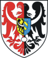
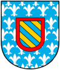

herb powiatu Kamienna Góra

Zgodnie z §1 ust. 2 uchwały Rady Powiatu Kamiennogórskiego z dnia 20 czerwca 2002 r. w sprawie zmiany uchwały nr XI/54/99 Rady Powiatu Kamiennogórskiego z dnia 26 maja 1999 r. w sprawie uchwalenia Statutu Powiatu Kamiennogórskiego: Herb powiatu kamiennogórskiego stanowi tarcza o kroju późnogotyckim. Godło powiatu stanowi orzeł dzielony w słup (pionowo) z tarczą sercową na piersi dzieloną w słup pionowo. Od prawej bocznicy tarczy sercowej, w złotym polu orzeł czarny ze srebrną połuksiężycową przepaską poprzez pierś i skrzydła. Od lewej bocznicy tarczy sercowej, w błękitnym polu tarczy sercowej ze srebrnymi liliami w sześciu pasach, tarcza (wewnętrzna) o czerwonej bordiurze, w której polu naprzemiennie błękitne i złote pasy od prawej bocznicy w skos w lewą stronę. Od prawej bocznicy tarczy w polu srebrnym połuorzeł czerwony z sierpową połuksiężycową srebrną przepaską poprzez skrzydło i pierś. Od lewej bocznicy tarczy w polu srebrnym połuorzeł czarny z sierpową połuksiężycową srebrną przepaską poprzez skrzydło i pierś.

Interesujący nas fragment herbu powiatu to: od lewej bocznicy tarczy sercowej, w błękitnym polu tarczy sercowej ze srebrnymi liliami w sześciu pasach, tarcza (wewnętrzna) o czerwonej bordiurze, w której polu naprzemiennie błękitne i złote pasy od prawej bocznicy w skos w lewą stronę. Jest to (sądząc z wyglądu bo opis jak dla mnie za bardzo zagmatwany) herb zakonu cystersów i chyba znalazł on się w herbie powiatu za przyczyną krzeszowskich cystersów. Ale czy rzeczywiście tak jest ?

{kind=link}
{kind=link}